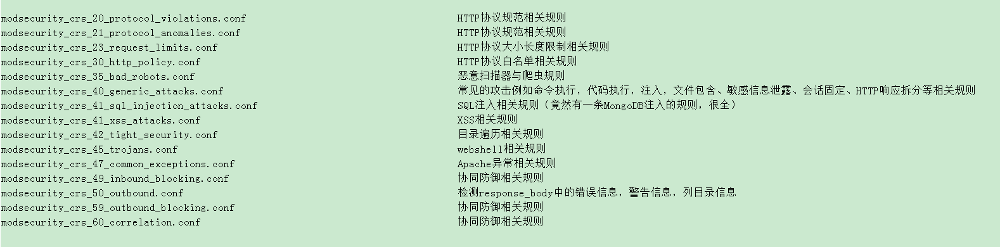
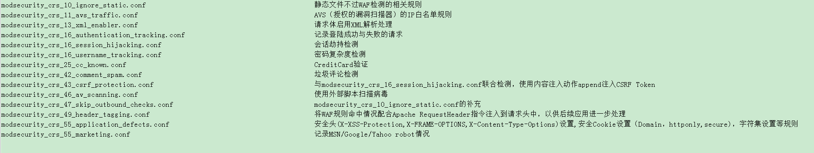
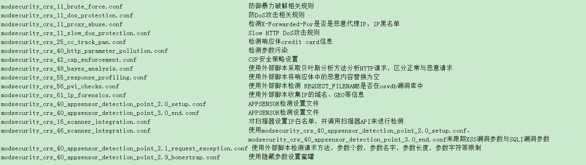
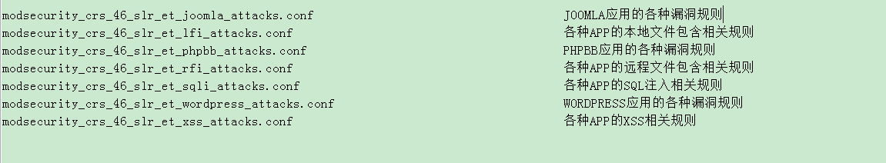

一款开原的WAF，可以作为模块内嵌web服务器，保护web服务器
ModSecurity核心规则集（CRS）提供以下类别的保户来防止攻击。
- HTTP Protection （HTTP防御） - HTTP协议和本地定义使用的detectsviolations策略。
- Real-time Blacklist Lookups（实时黑名单查询） -利用第三方IP信誉。
- HTTP Denial of Service Protections（HTTP的拒绝服务保护） -防御HTTP的洪水攻击和HTTP Dos 攻击。
- Common Web Attacks Protection（常见的Web攻击防护） -检测常见的Web应用程序的安全攻击。
- Automation Detection（自动化检测） -检测机器人，爬虫，扫描仪和其他表面恶意活动。
- Integration with AV Scanning for File Uploads（文件上传防病毒扫描） -检测通过Web应用程序上传的恶意文件。
- Tracking Sensitive Data（跟踪敏感数据） -信用卡通道的使用，并阻止泄漏。
- Trojan Protection（木马防护） -检测访问木马。
- Identification of Application Defects （应用程序缺陷的鉴定）-应用程序的错误配置警报。
- Error Detection and Hiding（错误检测和隐藏） -伪装服务器发送错误消息。
1、安装libapache2-modsecurity模块及其依赖包
apt-get install libxml2 libxml2-dev libxml2-utils libaprutil1 libaprutil1-dev libapache2-modsecurity
2、看一下modsecurity的当前版本
dpkg -s libapache2-modsecurity | grep Version
3、配置modsecurity，启用拦截模式
cd /etc/modsecurity/
mv modsecurity.conf-recommended modsecurity.conf
vim /etc/modsecurity/modsecurity.conf
修改
SecRuleEngine On
SecRequestBodyLimit 16384000
SecRequestBodyInMemoryLimit 16384000
4、modsecurity 核心规则集
核心规则集目录为：
/usr/share/modsecurity-crs/
基本规则集
base_rules/
已激活的规则集
activated_rules/
可选规则集
optional_rules/
实验性规则集
SLR 规则集
slr_rules/
5、启用modsecurity核心规则集
将我们想启用的规则集放置在activated_rules目录下 (可以做软连接)
以mod-security2.6版本为例
vim /etc/apache2/mods-available/mod-security.conf
Include /etc/modsecurity/*.conf
Include /usr/share/modsecurity-crs/*.conf
Include /usr/share/modsecurity-crs/activated_rules/*.conf
6、启用mod-security 模块
a2enmod headers
a2enmod mod-security
service apache2 reload
命令生效后，会在/var/log/apache2/目录下生成modsecurity的日志文件modsec_audit.log
7、下载最新的OWASP Core Rule Set
apt-get install 安装 ModSecurity是不完美的，因为一些最新的规则集可能没有包含进去，我们需要手动更新最新的mod-security-crs 规则集
以下是详细更新步骤：
cd /tmp
sudo wget -O SpiderLabs-owasp-modsecurity-crs.tar.gz https://github.com/SpiderLabs/owasp-modsecurity-crs/tarball/master
sudo tar -zxvf SpiderLabs-owasp-modsecurity-crs.tar.gz
sudo cp -R SpiderLabs-owasp-modsecurity-crs-/ /etc/modsecurity/
sudo rm SpiderLabs-owasp-modsecurity-crs.tar.gz
sudo rm -R SpiderLabs-owasp-modsecurity-crs-*
sudo mv /etc/modsecurity/modsecurity_crs_10_setup.conf.example /etc/modsecurity/modsecurity_crs_10_setup.conf
8、modsecurity 白名单设置
方法一、SecRuleRemoveById 指令：通过Rule ID禁用指定规则
#waf whitelist
<LocationMatch .*>
SecRuleRemoveById 960017 #allow Host Header is a IP address
</LocationMatch>
方法二、SecRuleRemoveByMsg指令：通过Rule Msg禁用指定规则
#waf whitelist
<LocationMatch .*>
SecRuleRemoveByMsg “Host header is a numeric IP address”
</LocationMatch>
方法三、url加白 ：对指定路径关闭WAF检测/或只记录不拦截
<LocationMatch /xss.php>
SecRuleEngine DetectionOnly（或者Off）
</LocationMatch>
方法四、
<IfModule mod_security2.c>
SecRuleEngine On|Off 将在服务器上激活ModSecurity防火墙。它会检测并阻止该服务器上的任何恶意攻击。
SecRuleEngine DetectionOnly 它只会检测到所有的攻击，并根据攻击产生错误，但它不会在服务器上阻止任何东西。
SecRequestBodyAccess On|Off 它会告诉ModSecurity是否会检查请求。它起着非常重要的作用，当一个Web应用程序配置方式中，所有的数据在POST请求中。它只有两个参数，ON或OFF。我们可以根据需求设置。
SecResponseBodyAccess On|Off 如果此参数设置为ON，然后ModeSecurity可以分析服务器响应，并做适当处理。它也有只有两个参数，ON和Off。我们可以根据求要进行设置。
SecDataDir /tmp 定义的ModSecurity的工作目录。该目录将作为ModSecurity的临时目录使用。
</IfModule>